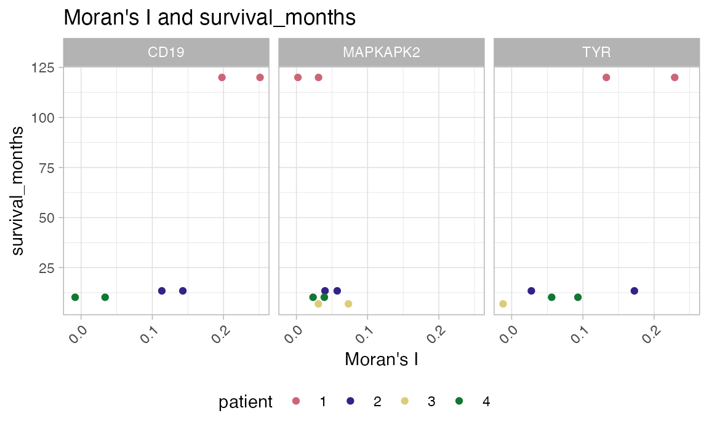

spatialGE: Guide to spatial heterogeneity analysis in melanoma (Thrane et al. 2018)
melanoma_ST_vignette.RmdThe package spatialGE provides a set of tools for the
visualization of gene expression from spatially-resolved transcriptomic
experiments, such as those generated by the 10X Visium platform.
Installation
The spatialGE repository is available at GitHub and can
be installed via devtools. To install
devtools, in case is not already installed in your R
console, please run the following code:
if("devtools" %in% rownames(installed.packages()) == FALSE) {
install.packages("devtools")
}After making sure devtools is installed, proceed to
install spatialGE:
#devtools::install_github("fridleylab/spatialGE")To use spatialGE, load the package using:
library('magrittr') # Use of pipe operator in this vignette
library('spatialGE')Spatially-resolved expression of melanoma stage III tumor biopsies
To show the utility of spatialGE, we use the Spatial
Transcriptomics (ST) data set generated by Thrane et
al. (2018). This data set includes lymph node biopsies from four
patients with stage IIIc melanoma, with two tissue slices per biopsy.
The technology used in this study allows for RNA capture in up to 1,007
capture areas (i.e., “spots”) separated each other by 200μM. The spots
are 100μM in diameter, which corresponds to 5-40 cells according to the
authors.
The data set is included in the spatialGE repository, but users can find the data in the authors’ website.
Creating an STList (Spatial Transcriptomics List)
In spatialGE, raw and processed data are stored in an STlist (S4
class object). The STlist can be created with the function
STlist(), which can take different inputs (see here
for more info). For this example, we provide the STlist function with
the following inputs:
Raw RNA counts, one per sample. The raw count files have gene names in the first column, and spots in subsequent columns. All files must be either tab-delimited or comma-delimited.
Spatial y and x coordinates for each spot. The first column of this file contains spot IDs matching the column names in the raw count files. The second and third columns contain the y and x coordinates of each spot in the raw count data.
A table with clinical data associated with each sample. This table is optional. Alternatively users can provide only the names of each sample (as a character vector). If the input is a table, sample names are in the first column, and clinical or metadata variables are in subsequent columns. The sample names should match partially the file names of the RNA count and coordinate files (for example, the sample ID “ST_mel4_rep2” matches the RNA count file “ST_mel4_rep2_counts.tsv” and the coordinate file “ST_mel4_rep2_mapping.tsv”.
The example files in this tutorial can be downloaded from the GitHub
repository. They are also stored in your local
spatialGE installation:
data_files <- system.file("extdata", package="spatialGE")Then, we look for the necessary files within the
spatialGE data repository. These files contain the raw gene
counts (count_files), coordinates
(coord_files), and clinical (clin_file)
metadata.
count_files <- list.files(data_files, full.names=T, pattern='counts')
coord_files <- list.files(data_files, full.names=T, pattern='mapping')
clin_file <- list.files(data_files, full.names=T, pattern='clinical')We can load the files into an STList object like so:
melanoma <- STlist(rnacounts=count_files, spotcoords=coord_files, samples=clin_file)
#> Found Matrix Data.
#> Requested 8 Samples
#> Cleaning Count and Coordinate Data Gene Names.
#> Converting Counts to Sparse Matrices
#> Completed STlist!
#> - Note: If you receive a warning indicating that an input file has a incomplete final line, you can ignore it. Alternatively, modify the input files with a text editor by adding an empty line at the end of the files.
The melanoma object is an STlist that contains the count
data, spot coordinates, and clinical data.
melanoma
#> Spatial Transcriptomics List (STlist).
#> 8 spatial array(s):
#> ST_mel1_rep1
#> ST_mel1_rep2
#> ST_mel2_rep1
#> ST_mel2_rep2
#> ST_mel3_rep1
#> ST_mel3_rep2
#> ST_mel4_rep1
#> ST_mel4_rep2
#>
#> 9 variables in sample data:
#> patient, slice, gender, BRAF_status, NRAS_status, CDKN2A_status, survival, survival_months, RINExploring variation between spatial arrays
The function bulk_pca() allows for a quick snapshot of
the variation in gene expression among samples. The function creates
‘bulk’ RNAseq data sets by combining all counts from each sample. Then,
it log transforms the ‘pseudo bulk’ RNAseq counts and runs a Principal
Component Analysis (PCA). Note that the spatial (x, y) coordinate
information is not considered in this analysis, which is intended only
as an exploratory analysis. In this case, we apply the function to look
for agreement between samples from the same patient: It is expected that
tissue slices from the same patient are more similar among them than
tissue slices from other patients. The bulk_pca() allows to
map a clinical variable to the PCA (patient in this example), by
including the name of the column from the sample metadata file.
pseudobulk_pca(melanoma, plot_meta='patient')
Transformation of spatially-resolved transcriptomics data
Many transformation methods are available RNA-Seq count data. In
spatialGE, the function transform_data()
applies log-transformation to the data, after library size
normalization. Similar to Seurat, it applies a scaling factor
(scale_f=10000 by default).
melanoma <- transform_data(melanoma)Visualization of gene expression from spatially-resolved transcriptomics data
After data transformation, expression of specific genes can be
visualized using ‘quilt’ plots. The function
plot_gene_quilt() shows the transformed expression of one
or several genes. We have adopted the color palettes from the packages
khroma and RColorBrewer. The name of a color
palette can be passed using the argument color_pal. The
default behavior of the function produces plots for all samples within
the STlist, but we can pass specific samples to be plotted using the
argument samples.
Let’s produce a quilt plot for the genes MS4A1 and
MLANA (B-cell marker and melanoma antigen, respectively), for
sample number 2 of patient 1 (samples=2).
quilts1 <- STplot(melanoma,
genes=c('MS4A1', 'MLANA'),
samples='ST_mel1_rep2',
visium=F,
color_pal='BuRd',
ptsize=2)Because spatialGE functions output lists of ggplot
objects, we can plot the results side-by-side using functions such as
ggarrange().
ggpubr::ggarrange(plotlist=quilts1, nrow=1, ncol=2, legend='bottom')
We can see that gene expression patterns of both genes are almost opposite: MS4A1 is expressed in the upper right portion of the tissue, whereas MLANA is expressed in the left portion. The left portion of the tissue corresponds to the melanoma compartment detected by Thrane et al., and the upper right portion corresponds to the a lymphoid tissue area (see Figure 3 of their study).
Spatial interpolation of gene expression
We can predict a smooth gene expression surface for each sample. In
spatialGE, this prediction is achieved by a widely used
spatial interpolation method in spatial statistics. The method known as
‘kriging’ allows for the estimation of gene expression values in the
un-sampled areas between spots, or cells/spots for which the sample
processing failed to provide data. Estimating a transcriptomic surface
via kriging assumes that gene expression of two given points is
correlated to the spatial distance between them.
The function gene_krige() performs kriging of gene
expression via the geoR package. We specify that kriging
will be performed for two of the spatial arrays
(samples=c('ST_mel1_rep2', 'ST_mel2_rep1')):
melanoma <- gene_interpolation(melanoma,
genes=c('MS4A1', 'MLANA'),
samples=c('ST_mel1_rep2', 'ST_mel2_rep1'))The surfaces can be visualized using the
STplot_interpolation() function:
kriges1 <- STplot_interpolation(melanoma,
genes=c('MS4A1', 'MLANA'),
samples='ST_mel1_rep2',
visium=F)
#> Loading required package: ggpolypath
#> Loading required package: ggplot2
ggpubr::ggarrange(plotlist=kriges1, nrow=1, ncol=2, common.legend=T, legend='bottom')
By looking at the transcriptomic surfaces of the two genes, it is easier to detect where “pockets” of high and low expression are located within the tissue. It is now more evident that expression of MS4A1 is lower on the left (melanoma) region of the tumor slice, compared to the rest of the slice.
Just like with STplot(), we can control which tissue
slice to plot with the samples argument. These commands
plot sample 1 from patient 2 (“ST_mel2_rep1”).
kriges2 <- STplot_interpolation(melanoma,
genes=c('MS4A1', 'MLANA'),
samples='ST_mel2_rep1',
visium=F)
ggpubr::ggarrange(plotlist=kriges2, nrow=1, ncol=2, common.legend=T, legend='bottom')
Unsupervised spatially-informed clustering (STclust)
Detecting tissue compartments or niches is an important part of the
study of the tissue architecture. We can do this by applying
STclust, a spatially-informed clustering method implemented in
spatialGE. STclust uses weighted average matrices to
capture the transcriptomic differences among the cells/spots. First, top
variable genes are identified via Seurat’s
FindVariableFeatures, and transcriptomic scaled distances
are calculated using only those genes. Next, scaled euclidean distances
are computed for the physical (x, y) distances among cells/spots. The
user defines a weight (ws) from 0 to 1, to apply to the
physical distances. The higher the weight, the less biologically
meaningful the clustering is given that the groups will only reflect the
physical distances between the cells/spots and less information on the
transcriptomic profiles will be used. After many tests, we have found
that weights between 0.025 - 0.25 are enough to capture the tissue
heterogeneity. The method uses dynamic tree
cuts to define the number of clusters. But users can also test a
series of k values (ks). For a more detailed description of
the method, please refer to the paper describing
spatialGE.
We’ll try several weights to see it’s effect on the cluster assignments:
melanoma <- STclust(melanoma,
ks='dtc',
ws=c(0, 0.025, 0.05, 0.2))
#> Registered S3 method overwritten by 'spatstat.geom':
#> method from
#> print.boxx cliResults of clustering can be plotted via the STplot()
function:
cluster_p <- STplot(melanoma,
samples='ST_mel1_rep2',
ws=c(0, 0.025, 0.05, 0.2),
visium=F,
ptsize=2)
ggpubr::ggarrange(plotlist=cluster_p, nrow=2, ncol=2, legend='right')
We can see that at w=0.025 and w=0.05,
tissue compartments are observed for the lymphoid tissue (upper right
portion of the tissue in yellow), with small pockets surrounding the
melanoma area (blue), possibly indicating immune activity around the
tumor spots. The color red likely corresponds to stromal spots. We have
used here the dynamic tree cuts (dtc) to automatically
select the number of clusters, but users can define their own range of k
to be evaluated, allowing further isolation of cell types.
Association between spatial heterogeneity and clinical variables (SThet)
To explore the relationship between a clinical variable of interest
and the level of gene expression spatial uniformity within a sample, we
can use the SThet() function:
melanoma <- SThet(melanoma,
genes=c('MAPKAPK2', 'TYR', 'CD19'),
method='moran')
#> CD19: Not present in the transformed counts for sample ST_mel3_rep1 .
#> TYR, CD19: Not present in the transformed counts for sample ST_mel3_rep2 .The SThet function calculates the Moran’s I statsitic
(or Geary’s C) to measure the level of spatial heterogeneity in the
expression of the genes (‘PDCD1’, ‘MS4A1’, ‘CD3E’). The estimates can be
compared across samples using the function
compare_SThet()
p = compare_SThet(melanoma,
samplemeta='survival_months',
color_by='patient',
gene=c('MAPKAPK2', 'TYR', 'CD19'))
#> Warning: Removed 3 rows containing missing values (geom_point).
#> Removed 3 rows containing missing values (geom_point).
print(p)
The calculation of spatial statistics and multi-sample comparison
with SThet and compare_SThet provides and easy
way to identify samples and genes exhibiting spatial patterns. The
previous figure shows that the two samples from patient 1 are different
in the spatial expression patterns of CD19, MAPKAPK2,
and TYR (we have already explored this data set to pick these
genes). In the case of the gene CD19 and TYR, the
differences likely correspond to the marked immune/B-cell and tumor
compartments respectively, which can be observed in the gene expression
surfaces of samples 1 and 2 from patient 1. Statistics like Moran’s I or
Geary’s C quantify the level to which the expression of a gene is
“concentrated” in an region of the sample (or conversely if it is evenly
distributed). It can also be seen in this plot that patient 1 also had
the highest overal survival within the data set. It is difficult to make
assertions on the effect of spatial heterogeinity on overal survival
with this small sample size, but we present this plot as an example of
the type of exploratory analysis that spatialGE can conduct.
See the table below for a simplistic interpretation of the spatial
autocorrelation statistics calculated in spatialGE:
| Low | Statistic | High |
|---|---|---|
| Dispersion | Moran’s I | Clustering |
| Clustering | Geary’s C | Dispersion |
The computed statistics are stored in the STlist for additional analysis/plotting that the user may want to complete. The statistics value can be accessed as a data frame using a command like:
melanoma@gene_meta[['ST_mel1_rep1']] %>%
dplyr::filter(gene %in% c('MAPKAPK2', 'TYR', 'CD19'))
#> # A tibble: 3 × 6
#> gene gene_mean gene_stdevs vst.variance.standardized moran_i geary_c
#> <chr> <dbl> <dbl> <dbl> <dbl> <lgl>
#> 1 MAPKAPK2 0.673 0.828 0.781 0.0311 NA
#> 2 CD19 0.460 0.814 3.67 0.251 NA
#> 3 TYR 0.381 0.645 1.29 0.133 NASession Info
sessionInfo()
#> R version 4.1.2 (2021-11-01)
#> Platform: x86_64-apple-darwin17.0 (64-bit)
#> Running under: macOS Big Sur 10.16
#>
#> Matrix products: default
#> BLAS: /Library/Frameworks/R.framework/Versions/4.1/Resources/lib/libRblas.0.dylib
#> LAPACK: /Library/Frameworks/R.framework/Versions/4.1/Resources/lib/libRlapack.dylib
#>
#> locale:
#> [1] en_US.UTF-8/en_US.UTF-8/en_US.UTF-8/C/en_US.UTF-8/en_US.UTF-8
#>
#> attached base packages:
#> [1] stats graphics grDevices utils datasets methods base
#>
#> other attached packages:
#> [1] ggpolypath_0.1.0 ggplot2_3.3.5 fields_14.1 viridis_0.6.2
#> [5] viridisLite_0.4.0 spam_2.9-1 spatialGE_1.1.0 magrittr_2.0.2
#>
#> loaded via a namespace (and not attached):
#> [1] utf8_1.2.2 reticulate_1.24 tidyselect_1.1.1
#> [4] htmlwidgets_1.5.4 grid_4.1.2 Rtsne_0.15
#> [7] munsell_0.5.0 codetools_0.2-18 ragg_1.2.5
#> [10] ica_1.0-2 future_1.23.0 miniUI_0.1.1.1
#> [13] withr_2.4.3 colorspace_2.0-2 highr_0.9
#> [16] knitr_1.37 rstudioapi_0.13 Seurat_4.1.0
#> [19] ROCR_1.0-11 ggsignif_0.6.3 tensor_1.5
#> [22] listenv_0.8.0 labeling_0.4.2 polyclip_1.10-0
#> [25] bit64_4.0.5 farver_2.1.0 rprojroot_2.0.2
#> [28] parallelly_1.30.0 vctrs_0.3.8 generics_0.1.2
#> [31] xfun_0.31 R6_2.5.1 khroma_1.8.0
#> [34] concaveman_1.1.0 spatstat.utils_3.0-1 cachem_1.0.6
#> [37] reshape_0.8.9 assertthat_0.2.1 promises_1.2.0.1
#> [40] scales_1.2.0 vroom_1.5.7 rgeos_0.5-9
#> [43] gtable_0.3.0 globals_0.14.0 goftest_1.2-3
#> [46] rlang_1.0.0 systemfonts_1.0.4 splines_4.1.2
#> [49] rstatix_0.7.0 rgdal_1.6-4 lazyeval_0.2.2
#> [52] spatstat.geom_3.0-6 broom_0.7.12 yaml_2.2.2
#> [55] reshape2_1.4.4 abind_1.4-5 backports_1.4.1
#> [58] httpuv_1.6.5 tools_4.1.2 ellipsis_0.3.2
#> [61] spatstat.core_2.3-2 kableExtra_1.3.4 raster_3.5-15
#> [64] jquerylib_0.1.4 RColorBrewer_1.1-2 dynamicTreeCut_1.63-1
#> [67] wordspace_0.2-6 ggridges_0.5.3 Rcpp_1.0.10
#> [70] plyr_1.8.6 purrr_0.3.4 ggpubr_0.4.0
#> [73] rpart_4.1-15 deldir_1.0-6 pbapply_1.5-0
#> [76] cowplot_1.1.1 zoo_1.8-9 SeuratObject_4.0.4
#> [79] ggrepel_0.9.1 cluster_2.1.2 fs_1.5.2
#> [82] data.table_1.14.2 scattermore_0.7 lmtest_0.9-39
#> [85] RANN_2.6.1 fitdistrplus_1.1-6 matrixStats_0.61.0
#> [88] hms_1.1.1 patchwork_1.1.1 mime_0.12
#> [91] evaluate_0.14 xtable_1.8-4 sparsesvd_0.2
#> [94] gridExtra_2.3 compiler_4.1.2 tibble_3.1.6
#> [97] maps_3.4.0 KernSmooth_2.23-20 V8_4.0.0
#> [100] crayon_1.4.2 htmltools_0.5.2 mgcv_1.8-38
#> [103] later_1.3.0 tzdb_0.2.0 tidyr_1.2.0
#> [106] DBI_1.1.2 MASS_7.3-54 Matrix_1.4-1
#> [109] car_3.0-12 readr_2.1.2 cli_3.1.1
#> [112] parallel_4.1.2 dotCall64_1.0-1 igraph_1.2.11
#> [115] pkgconfig_2.0.3 pkgdown_2.0.7 sp_1.4-6
#> [118] terra_1.7-3 plotly_4.10.0 spatstat.sparse_3.0-0
#> [121] xml2_1.3.3 svglite_2.0.0 bslib_0.3.1
#> [124] iotools_0.3-2 webshot_0.5.2 rvest_1.0.2
#> [127] stringr_1.4.0 digest_0.6.29 sctransform_0.3.3
#> [130] RcppAnnoy_0.0.19 spatstat.data_3.0-0 rmarkdown_2.14
#> [133] leiden_0.3.9 uwot_0.1.11 curl_4.3.2
#> [136] shiny_1.7.1 lifecycle_1.0.1 nlme_3.1-153
#> [139] jsonlite_1.7.3 carData_3.0-5 desc_1.4.0
#> [142] fansi_1.0.2 pillar_1.7.0 lattice_0.20-45
#> [145] fastmap_1.1.0 httr_1.4.2 survival_3.4-0
#> [148] glue_1.6.1 png_0.1-7 bit_4.0.4
#> [151] stringi_1.7.6 sass_0.4.0 textshaping_0.3.6
#> [154] memoise_2.0.1 dplyr_1.0.7 irlba_2.3.5
#> [157] future.apply_1.8.1